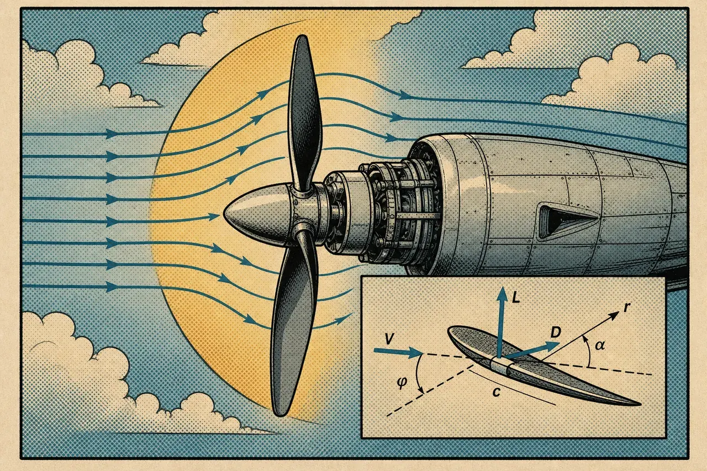
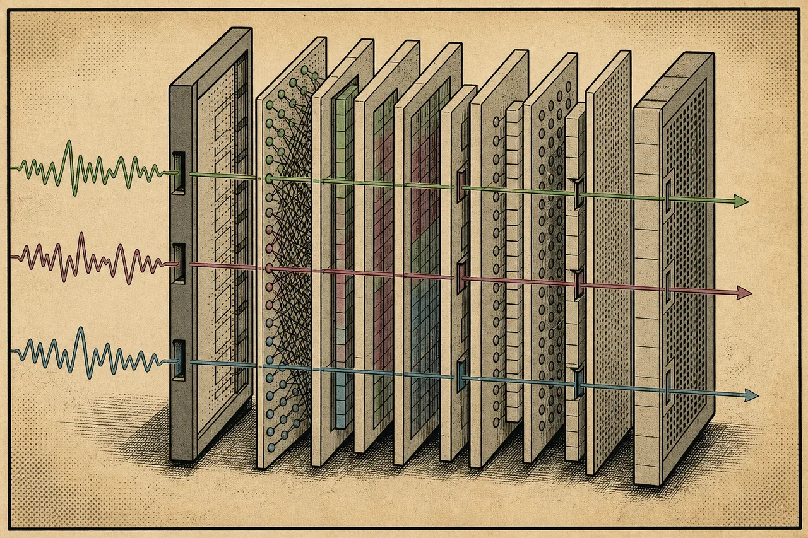
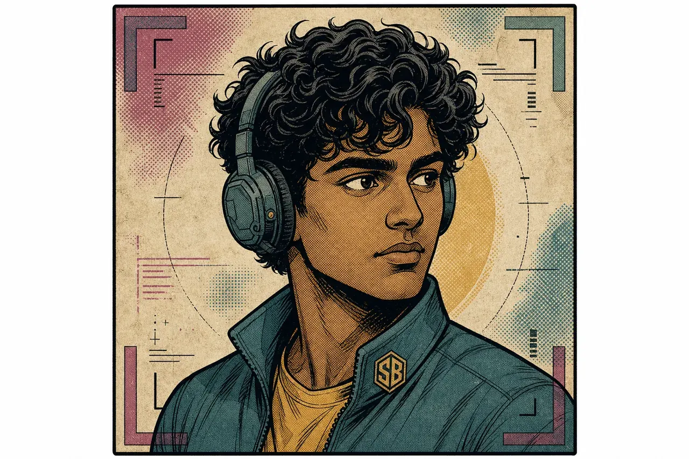

Machine learning and backend engineering across legal AI, quant, healthcare, LLM instrumentation, and fluid dynamics — built to verify, simulate, and refuse when uncertain.
"
I build systems where uncertainty is the default.
"
10 PAGES · 04 CASE FILES · 02 LIVE SIMS · ·· REPOS
It started with drones I build and fly — homemade F450 and F660 frames, built up from motors, ESCs, flight controller, radio. Descend too fast and a rotor drops into its own downwash: vortex ring state. The aircraft could show me the failure — it couldn't explain it.
/02 — SOFTWARE
So I wrote code to ask the hardware better questions — telemetry logging, tuning tools, scripts that turned every flight into data I could interrogate. Software became the instrument layer between what the machine did and what I actually understood about it.
/03 — SIMULATION
The logs said what happened, never why. For that I had to build the physics myself — vortex-ring dynamics, propeller BEMT — and walk the whole flight envelope on a screen, including the corners too dangerous to fly. Simulation is how I push a system to failure without breaking it.
Anima is that same instinct pointed at language models: forward hooks into the internals, probe heads reading valence, arousal, and uncertainty straight from the activations — benchmarked on HaluEval and TruthfulQA. Hardware, software, simulation, models — the question never changed: can you see instability building before the system commits.
PRINCIPLES · 03
Look inside, not just at the output. Forward hooks + probe heads + benchmarked uncertainty.
Simulate when reality costs. CFD, BEMT, walk-forward.
Refusal is a feature. Calibrated "I don't know" beats a confident hallucination.
"I build systems that operate under uncertainty — across interpretability, finance, healthcare, and physical simulation. My work combines machine learning, backend engineering, and physics-based modeling to produce systems that are measurable, explainable, and grounded in real-world constraints."
VERIFY!
PAGE / 03
THE LAB
— PHYSICS · CFD · SELF-DRIVEN — demo curves, real solvers in the repos — drag ↓

EXPERIMENT 01 · BEMT
Propeller Simulator
Demo curves shaped like the solver's output — the real BEMT code (RPM × pitch × blade count) lives in the repo below. Drag to explore thrust / efficiency / power.
The simulators above aren't paper exercises — they're tools built to design and tune the aircraft below. Sim and hardware are the same project told from two ends.
MULTIROTOR
Homemade F450 quad + F660 hex builds — frame up: motors, ESCs, flight controller, radio. PID tuning, propeller selection informed by the BEMT solver, telemetry logging per flight.
GROUND + HOME
Rovers, an automated plant-watering system, and home automation on ESP8266-class microcontrollers.
HOMELAB
Raspberry Pi NAS with sanitized configs, media + monitoring stack, and distributed-computing experiments.
Build dossiers (BOMs, flight logs, safety notes) are kept in a structured build-log repo — going public with photos and per-flight data.
SIMULATE!
PAGE / 04
CASE FILE #01
— LLM INTERNALS · INTERPRETABILITY · HERO FILE —

EXHIBIT APROBE READOUT
CASE FILE #01 · HERO
ANIMA
"Measure what's inside the model. Not what it says."
Open-source instrumentation for Hugging Face causal LMs. While a model generates, forward hooks capture its hidden states at chosen layers; small trained probe heads read valence, arousal, and uncertainty out of those activations — per token, live. A guard policy recommends abstaining when the readouts look unreliable. Validated by a 5-model benchmark council; streams over REST + WebSocket with a live dashboard and a public demo on HF Spaces.
Hooks — per-token hidden-state capture at selected layers
Probes — trainable heads for valence, arousal, uncertainty
Guard — abstain recommendation, run against HaluEval + TruthfulQA
Clinical risk scoring from labs + lifestyle. Runtime path uses ACC/AHA Pooled Cohort and FINDRISC — actual clinical models, not invented scores. Refuses when input is incomplete.
ACC/AHA — 10-year CVD risk (Pooled Cohort)
FINDRISC — diabetes risk from lifestyle + labs
Safety gates — abstain when data is missing or out-of-range
10-day IISc internship on vortex rings (May 2025). CFD simulators on GitHub — vortex rings, propeller BEMT, vortex tracking — are self-driven work.
PANEL 2
2025 · Q3
VEGAM CO
Engineering Intern
Prototype water-based air filtration systems. Hardware-first iteration, weekly build / test / refine.
PANEL 3
2026 · Q1
VEGAM CO
Engineering Intern
Built a text-to-SQL RAG pipeline with schema linking and SQL validation. NDA-restricted — details not public. Public clean-room twin: text2sql-rag ↗
PANEL 4 · ONGOING
NOW
ATHERA
Founder
AI automation and workflow systems for small businesses — backend integrations, lead workflows, and sites. 6+ months building; client details not public.
SHIP!
PAGE / 09
THE OPERATOR
— file: ~/sb.dossier —

SUBJECTSB · OPERATOR
QUOTE
"I like pressure tests. In systems and in life."
Builder across legal AI, quant, healthcare, LLM instrumentation, and physical simulation. Measurable performance, tight feedback loops, and knowing exactly when a system should refuse to answer. Competitive sport — skating, football, badminton, swimming. MUN, NGO work, 50+ hrs of community service.
STACKDAILY
langPython · TypeScript · GLSL · C
mlPyTorch · Hugging Face · LangChain · vLLM
webFastAPI · Next.js · WebGL · Three.js
dataPostgres · Qdrant · Redis · DuckDB
infraDocker · Linux · GH Actions · n8n
STATSDOSSIER · FILE
04case files
··public repos
03internships
··other projects
INDEXGITHUB · LIVE
Full public project list — synced from GitHub. Case files and lab experiments are featured above.